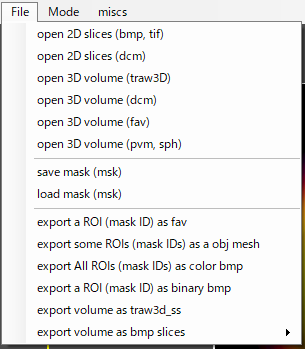
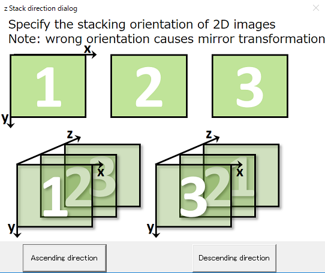
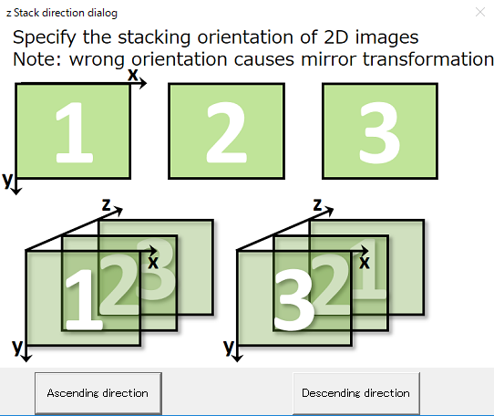

RoiPainter I/O

RoiPainter I/O Visualization Segmentation Download code (github)
I/O in RoiPainter
RoiPainter3Dで画像を読み込むには，Menu > File より対象画像形式にあった項目をクリックします．
また，Menu > Fileより，生成したマスクデータの書き出し・読み込みや、マスクデータを2値画像・メッシュモデルなどとして書き出すことも可能です．

D-1) file > Open slices (bmp, tif)D-2) file > Open slices (dcm)
D-3) file > Open 3D Volume (traw3d_ss)
D-4) file > Open 3D Volume (dcm)
D-5) file > Open 3D Volume (fav)
D-6) file > Open 3D Volume (pnm, sph)
M-1) file > Save Mask (msk)
M-2) file > Load Mask (msk)
E-1) file > Export a ROI as fav
E-2) file > Export some ROIs as obj mesh
E-3) file > Export All ROIs as color bmp
E-4) file > Export a ROI as binary bmp
E-5) file > Export volume as traw3d_ss
Open Volume data (D-1 ~ D-6)
D-1) file > Open slices (bmp, tif) : 2次元スライス画像（bmp形式またはtif形式）を読み込めます．異なるサイズ（幅x高）のスライス画像を読み込むことは出来ません．カラー画像も読み込めますが，自動的に輝度値画像に変換されます．
D-2) file > Open slices (dcm) : Dicom スライス画像を読み込みます．実装にはDCMTKを利用しています．
D-3) file > Open 3D Volume (traw3d_ss) : 独自形式 traw3d_ss ファイルを読み込みます．このファイルは，ピッチ情報を持ち，一つの画素をsigned short（16bit）として保持します．
データフォーマットの詳細は，こちらを参照してください．
D-4) file > Open 3D Volume (dcm) : 3次元Dicom画像（ひとつのDicomファイルで3次元画像を保持する形式）を読み込みます．
D-5) file > Open 3D Volume (fav) : fav形式の3次元画像を読み込みます（実装中）
D-6) file > Open 3D Volume (pvm, sph) : pvm形式，または，sph形式の3次元画像を読み込みます．
Save and Load Mask
M-1) file > Save Mask (msk) : 作成したマスクデータを独自形式（.msk）で保存します．
M-2) file > Load Mask (msk) : マスクデータ（.msk）を読み込みます．作成中のマスクデータが上書きされるので注意してください．
Export
E-1) file > Export a ROI as fav : （実装中）作成したマスクデータを，.fav形式にて出力します．fav形式の詳細はこちらを参照.
E-2) file > Export some ROIs as obj mesh : 作成したマスクデータから複数の領域(ROI)を選択し，それらをひとつのメッシュモデル（obj）として出力します．出力の際，平滑化の回数も指定できます．
E-3) file > Export All ROIs as color bmp : 作成したマスクデータをカラーのbmpスライスデータとして出力します．
E-4) file > Export a ROI as binary bmp : 作成したマスクデータからひとつの領域(ROI)を選択して，バイナリbitmapスライスデータとして出力します．
E-5) file > Export volume as traw3d_ss : 現在読み込んである画像データをtraw3d_ss形式にて保存します．
Export and Import camera position
上記のほかに，Menu > Miscs よりカメラの位置を書き出し・読み込み可能です．
論文の図表作成の際に同じ位置にカメラを配置したい事があるため実装しました．
C-1) MISCS > Export Current Camera : 現在のカメラ位置をテキスト形式で保存します．
C-2) MISCS > Import Camera Position : 上で保存したカメラ位置情報を読み込み，カメラ位置を移動します．
入力データを積み重ねる方向について
RoiPainterは，bmp/dcm/tifなど二次元スライス画像や，traw3d_ss/3d dicomなどの3次元画像を読み込みます．
これら3次元画像は，左上が原点（右方向がx軸の正，下方向がy軸の正）の二次元画像を積み重ねた構造を持ちます．
画像データ・マスクデータの読み込むと以下のダイアログを表示されます． このダイアログより画像をスタックする方向を指定してください．ダイアログ中の図の通り，3次元空間の原点は左上手前になります．

※ dcmなど積み重ねる方向をデータ内に含む画像については，自動的に決定されます．
※ 読み込み時にDescending orderを選択した場合，その後画像やマスクをexportすると，z軸方向に反転したものが出力されます．
※ 画像とマスクは同じスタック方向を指定する必要があります．
画像データ・マスクデータの読み込むと以下のダイアログを表示されます． このダイアログより画像をスタックする方向を指定してください．ダイアログ中の図の通り，3次元空間の原点は左上手前になります．

※ dcmなど積み重ねる方向をデータ内に含む画像については，自動的に決定されます．
※ 読み込み時にDescending orderを選択した場合，その後画像やマスクをexportすると，z軸方向に反転したものが出力されます．
※ 画像とマスクは同じスタック方向を指定する必要があります．